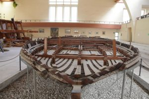

Museo delle Navi romane di Nemi
Il Museo venne costruito tra il 1933 e il 1939 per ospitare due gigantesche navi appartenute all’imperatore Caligola (37-41 d.C.)
Recuperate nelle acque del lago tra il 1929 e il 1931. È stato quindi il primo Museo in Italia ad essere costruito in funzione del contenuto, due scafi dalle misure rispettivamente di m. 71,30 x 20 e m. 73 x 24, purtroppo distrutti durante un incendio nel 1944.
Riaperto nel 1953, il Museo venne nuovamente chiuso nel 1962 e infine definitivamente riaperto nel 1988.